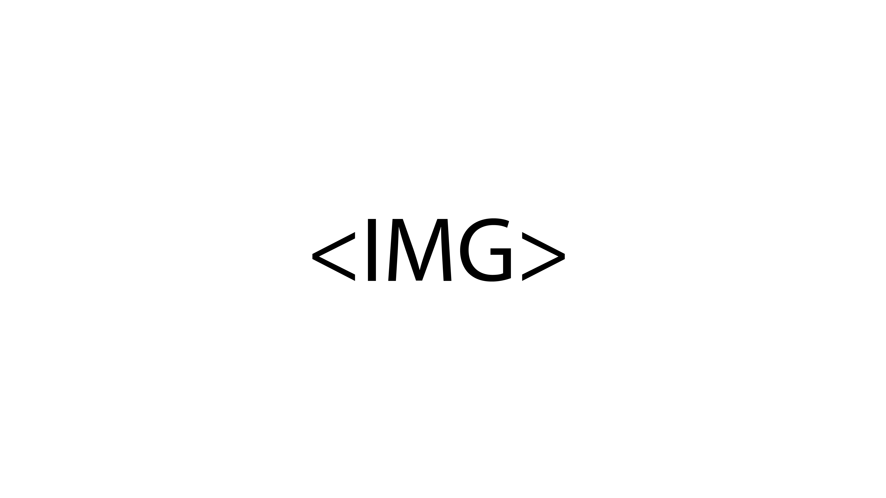

Design
Story design
A story called Klumperbeven that is very difficult and complicated to read. The words are not in correct sentences and weirdly spread throughout. I tried to illustrate that by using visuals.
Project NEMO and MELKWEG
For a school assignment I had to give locations like NEMO and the MELKWEG new visuals for their persona. For NEMO I focused a lot on the age group, which is children, and the science that is showed in the NEMO museum. For MELKWEG I focused on their tight designs and blocky outlook.
Fun buttons
In my free time I had a fun idea to try to spice up the buttons in applications or websites. These buttons normally stand very minimalistic, so much so, that you not always can see if you pressed it correctly. From this slight frustration, the idea and inspiration sprung.
Design History
To make good design I also wanted to research what design actually is. This is a very broad subject, so I tried to find a loophole, the loophole that I found was to take a trip through design history. Learn how it started, what the big design influences were, and much much more. All of this new information I illustrated hand drawn and written in a cute notebook.
OBA
For my very first design assignment at my study I had to design a library application for young teens. It is most definitely not my best work, but as a first piece, I am just very proud of it. The app helps you easy and fun going to help choose your perfect book from the library.